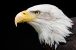
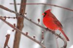
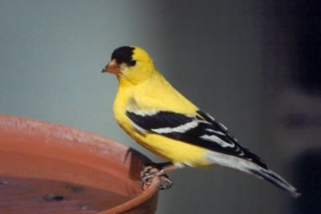

Backyard Birds of Utah
Welcome to Backyard Birds of Utah! If you love birdwatching like we do, you should enjoy looking around this site. Take a look at our Bird Profiles and take the opportunity to complete our survey.
Bird Profiles
Move your mouse over the thumbnails to see a larger image.





American Goldfinch
Tribute Spotlight

Backyard birdwatching gives us a chance to enjoy Utah wildlife up close. From colorful songbirds to majestic raptors, every sighting adds to the fun of learning about nature. more >>